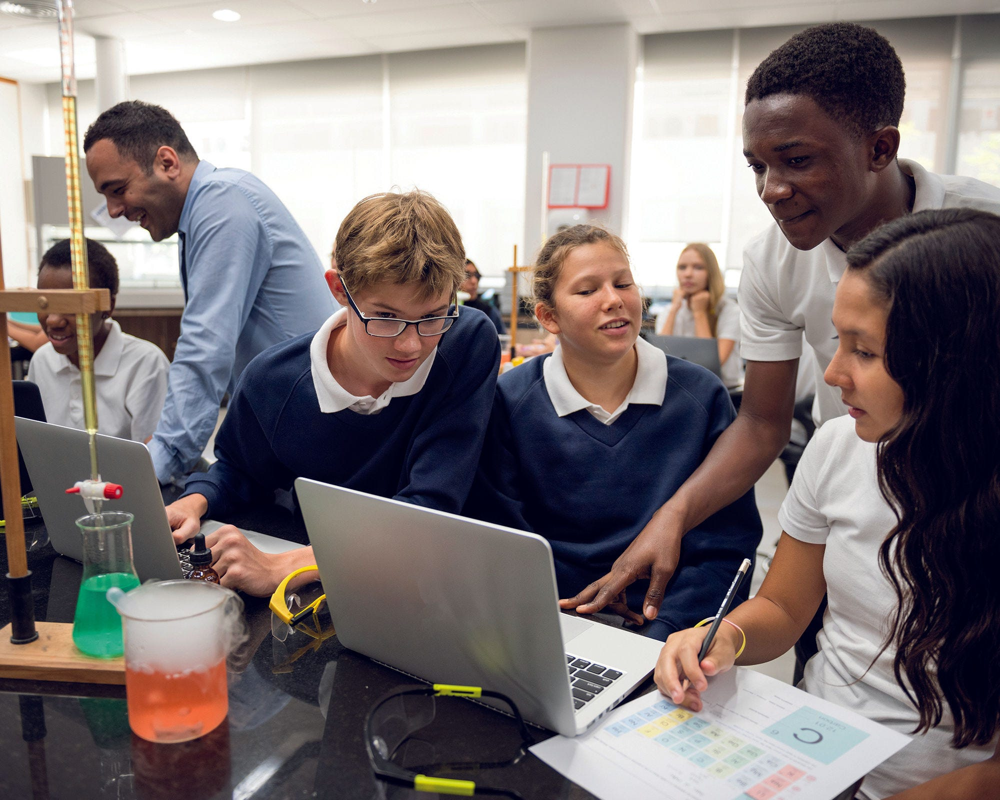

給教師與高中生的互動解讀看見臺灣的
看見臺灣的
高表現與下一步
從科學、數學、閱讀，到自我調節、AI 使用與環境行動，把 OECD 的 377 頁報告轉成可探索、可討論、可教學的資料介面。
一句話先讀：臺灣三大學科均進入前十，但成長型思維、自我監控與環境職涯興趣，值得教育現場持續投入。

Top 10三大領域皆進入前十圖片：OECD PISA 2025 Chinese Taipei country note
平均分數：臺灣明顯高於 OECD
點擊切換，查看臺灣與 OECD 平均。
科學 Science數學 Mathematics閱讀 Reading計算問題解決 CPS
345
閱讀第 3、數學第 4、計算問題解決第 5；科學平均 540 分，與澳門及日本無顯著差異。
基礎能力覆蓋率
達熟練度第 2 級（Proficiency Level 2）以上
色條為臺灣；灰條為 OECD 平均。
頂尖表現者
熟練度第 5 或 6 級（Top performers）
科學 Science
20% / 7%
數學 Mathematics
32% / 8%
閱讀 Reading
13% / 6%
粗體為臺灣；斜線後為 OECD 平均。
投入不弱，策略仍可加深
臺灣學生遇到困難時願意加把勁，但在成長型思維、規劃與理解監控上低於 OECD 平均。
好奇心 Curiosity
73% / 73%
額外努力 Perseverance
69% / 60%
成長型思維 Growth mindset
46% / 69%
規劃讀書方式 Planning
30% / 37%
自我提問 Checking
33% / 49%
值得保留的求助文化
83%需要時向教師求助
OECD 77%
OECD 77%
90%不理解時向同學求助
OECD 82%
OECD 82%
目標設定與科學表現
指數每增加 1 單位，科學表現關聯增加 9 分；OECD 平均 3 分。
求助與科學表現
指數每增加 1 單位，科學表現關聯增加 13 分；OECD 平均 6 分。
數位使用：量相近，分心較少
1.8 小時每日在校數位學習
OECD 1.7 小時
OECD 1.7 小時
1.1 小時每日在校數位休閒
OECD 1.1 小時
OECD 1.1 小時
課堂數位分心
13% / 28%
校園手機禁用
43% / 49%
課堂評估 AI 資訊
66% / 63%
AI 學習使用情境
每週使用 AI 聊天機器人協助學習：臺灣 40%，OECD 46%。
初步研究 Research
22% / 31%
摘要文本 Summarise
20% / 30%
寫作草稿 Drafting
21% / 29%
關聯不等於因果。臺灣課堂數位分心與科學分數差異無顯著關聯。
科學課的教師支持高於 OECD
關心每位學生
79% / 69%
教到學生理解
72% / 66%
需要時額外協助
84% / 73%
校園生活訊號
11%每月至少數次受霸凌
OECD 20%
OECD 20%
38%測驗前兩週曾遲到
OECD 50%
OECD 50%
28%教學受師資短缺影響
OECD 39%
OECD 39%
8%基礎設施短缺影響教學
2022 年 19%
2022 年 19%
家庭支持正在下降
每週詢問孩子在校經驗為 59%（2022：62%）；每週討論在校問題為 53%（2022：58%）。這是跨國普遍現象，也提醒學校設計低門檻的親師生對話。
公平 Equity
91 分社經優勢與弱勢學生科學差距
OECD 約 85 分
OECD 約 85 分
11%弱勢但進入國內科學前四分位
OECD 12%
OECD 12%
社經地位解釋臺灣科學表現變異的 11%，接近 OECD 12%。
環境素養強，職涯連結較弱
環境科學達基準
87% / 74%
相信自己能帶來改變
92% / 81%
相信集體行動有效
87% / 82%
懂得與他人合作
86% / 68%
想投入環境相關職涯
50% / 62%
從態度走向行動
53% 與親友討論環境行動
OECD 平均 56%，可用於探究與溝通任務。
53% 依永續性做購買決策
接近 OECD 54%，適合連結消費、公民與資料判讀。
把資料變成課堂行動
以下是本網站依 OECD 數據整理的教學啟示，並非 OECD 官方政策建議。點選卡片展開可直接使用的提問。
自我調節學習（Self-regulated learning）
任務前寫「我要怎麼做」，進行中標記「哪裡不懂」，結束後回答「下次會改什麼」。可討論：你通常在何時發現自己其實沒有理解？
批判閱讀（Critical reading）
選兩則來源不同、立場相異的短文，區分事實、推論與意見，再說明哪一項證據最能改變自己的判斷。
AI 素養（AI literacy）
保留提示詞與 AI 回答，以第二來源查證三個主張，最後寫出「我保留、修正與拒絕了哪些內容，以及理由」。
環境行動與職涯探索
以校園能源、飲食或交通為題，分派資料分析師、設計師、工程師、政策溝通者等角色，看見環境能力如何進入真實工作。
資料怎麼讀
- 對象：臺灣 7,279 名學生、292 所學校，代表約 18.1 萬名 15 歲學生；估計涵蓋率 92%。
- 測驗：學生作答兩小時，每人測兩個領域；另填寫約 35 分鐘背景問卷。
- 品質：OECD 判定臺灣資料符合 PISA 技術品質標準。
- 限制：問卷比例可能受文化與作答習慣影響；相關關係不能直接解讀為因果。
- 發布範圍：英語外語評量與數位自我導向學習分析預計 2027 年發布。
本網站為 OECD 原始作品的繁體中文改編與教學重整。若改編內容與原文有出入，以英文原文為準；網站解讀不代表 OECD 或其會員國的官方立場。資料更新：2026-09-11。